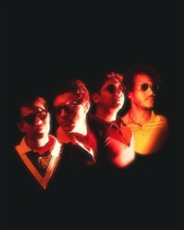

Avante League · División 1
Proximamente
Seguí la campaña de los clubes de D1, jornada a jornada.

Clubes de D1
 Arshadows FC
Arshadows FC- BWBlack Wolves
 Chaparritas FC
Chaparritas FC- GFCGold FC
 Los Rayos
Los Rayos
Los Vaguens Nova Milan
Nova Milan- SSSensi Stars
Tabla de puntos
| Club | Pts | PJ | PG | PE | PP | GF | GC | DG |
|---|---|---|---|---|---|---|---|---|
| Arshadows FC | 0 | 0 | 0 | 0 | 0 | 0 | 0 | 0 |
| Black Wolves | 0 | 0 | 0 | 0 | 0 | 0 | 0 | 0 |
| Chaparritas FC | 0 | 0 | 0 | 0 | 0 | 0 | 0 | 0 |
| Gold FC | 0 | 0 | 0 | 0 | 0 | 0 | 0 | 0 |
| Los Rayos | 0 | 0 | 0 | 0 | 0 | 0 | 0 | 0 |
| Los Vaguens | 0 | 0 | 0 | 0 | 0 | 0 | 0 | 0 |
| Nova Milan | 0 | 0 | 0 | 0 | 0 | 0 | 0 | 0 |
| Sensi Stars | 0 | 0 | 0 | 0 | 0 | 0 | 0 | 0 |
Antes de la primera jornada, los clubes figuran en orden alfabético.
Jornadas
7 jornadas · 28 partidos · Todos contra todos a una vuelta.
Fechas y horarios por confirmar.
Partidos por jornada
Jornada 1
- Los Rayosvs.SSSensi Stars
- BWBlack Wolvesvs.Chaparritas FC
- Arshadows FCvs.Nova Milan
- Los Vaguensvs.GFCGold FC
Jornada 2
- BWBlack Wolvesvs.Los Rayos
- Nova Milanvs.SSSensi Stars
- Chaparritas FCvs.Los Vaguens
- GFCGold FCvs.Arshadows FC
Jornada 3
- Los Rayosvs.Nova Milan
- Los Vaguensvs.BWBlack Wolves
- SSSensi Starsvs.GFCGold FC
- Arshadows FCvs.Chaparritas FC
Jornada 4
- Los Vaguensvs.Los Rayos
- GFCGold FCvs.Nova Milan
- BWBlack Wolvesvs.Arshadows FC
- Chaparritas FCvs.SSSensi Stars
Jornada 5
- Los Rayosvs.GFCGold FC
- Arshadows FCvs.Los Vaguens
- Nova Milanvs.Chaparritas FC
- SSSensi Starsvs.BWBlack Wolves
Jornada 6
- Arshadows FCvs.Los Rayos
- Chaparritas FCvs.GFCGold FC
- Los Vaguensvs.SSSensi Stars
- BWBlack Wolvesvs.Nova Milan
Jornada 7
- Los Rayosvs.Chaparritas FC
- SSSensi Starsvs.Arshadows FC
- GFCGold FCvs.BWBlack Wolves
- Nova Milanvs.Los Vaguens
Estadísticas
- Partidos jugados
- 0
- Goles marcados
- 0
- Promedio por partido
- —